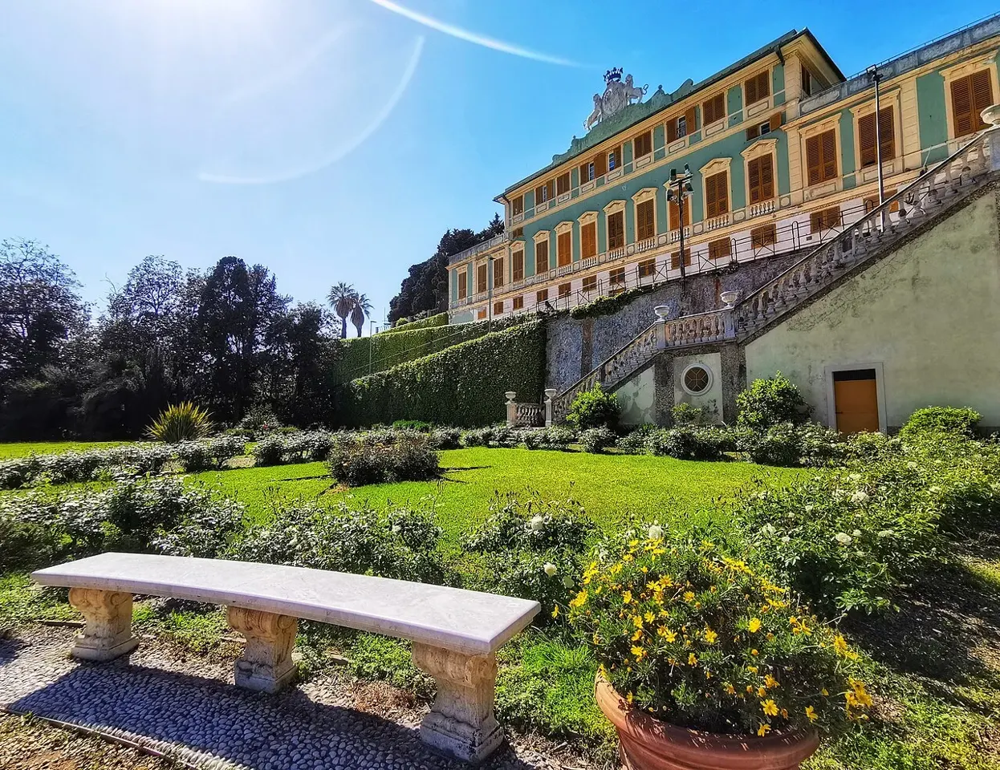

Pegli
Villa Pallavicini e Museo di Archeologia Ligure
La villa ospita reperti che raccontano il passato della Liguria, dalla preistoria al mondo romano.
Una curiosità
Tra i reperti figurano la Tavola di Polcevera e le sepolture delle Arene Candide.
ESPLORA GENOVA
Parchi storici e paesaggi marini all’estremità occidentale della città.
Pegli, Prà, Voltri, Multedo, Palmaro e Crevari.
Comune · Municipi e quartieri ↗
Pegli
La villa ospita reperti che raccontano il passato della Liguria, dalla preistoria al mondo romano.
Tra i reperti figurano la Tavola di Polcevera e le sepolture delle Arene Candide.
Voltri

Un parco storico sulle alture del Ponente, legato alla famiglia Brignole Sale.
È uno dei grandi complessi verdi storici valorizzati dal Comune.
Questa è una prima selezione: altre strade e altri luoghi saranno aggiunti dopo la verifica delle fonti.
Scegli un altro municipio →